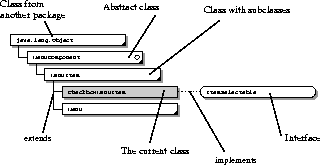

[Top] [Prev] [Next] [Bottom]
Appendix B: Legend for Class Diagram
In a class diagram, we visually distinguish the different kinds of Java entities, as follows:
- The interface: A rounded rectangle
- The class: A rectangle
- The abstract class: A rectangle with an empty dot
- The final class: A rectangle with a black dot
- Classes with subclasses: A rectangle with a small black triangle on the lower right corner
Most of these elements are shown below. The class or interface being described in the current chapter is shaded grey (this is not applicable for package class diagrams). A solid line represents extends, while a dotted line represents implements.

[Top] [Prev] [Next] [Bottom]
jndi@java.sun.com
Copyright © 1999, Sun Microsystems, Inc. All rights
reserved.